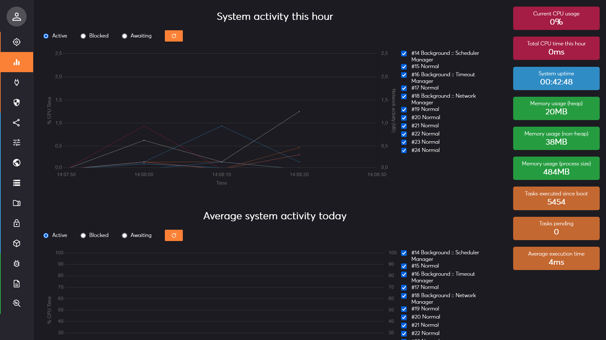
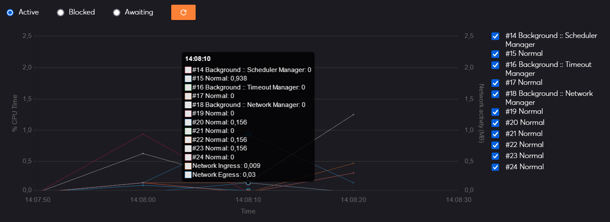
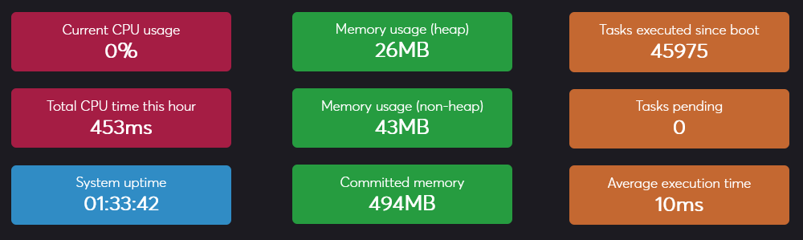

Management Interface Page: Statistics
Description
This management interface page displays various performance metrics related to the system. In the center, you can find system activity information for each internal thread for the current hour, day and year. On the right, some instantaneous metrics are displayed and refreshed every second.

System activity
The system activity is displayed for each internal thread and is averaged per time period: 10s for the hourly graph, 1h for the daily graph, and 1day for the yearly graph. It provides a history of the ratio of processor time used by the thread.
That is, if the thread used the CPU actively during 5 second in the last 10 seconds, then its ratio is 50%.
There are 3 different aspects you can analyze:
- Active: the total CPU time that a thread spent in active computation.
- Blocked: the approximate elapsed time that a thread was blocked by some condition or by another thread and could not use the CPU actively.
- Awaiting: the approximate elapsed time that a thread spent idle willingly or because there was no task to perform.
Except for rounding errors, the sum of all three metrics should always give you 100% as a thread is either idle, active or blocked.

On the right of the graph, a secondary axis displays the network activity (upload and download) in MB.
Metrics
On the right of the page, you can find additional metrics about the system:

- Current CPU usage: this is the current total processor usage of the JVM. This includes everything about Aeonics but does not account for other systems running on the same machine.
- Total CPU time this hour: this is a cumulated sum of the activity of all threads in the current clock hour.
- System uptime: the number of hours, minutes, seconds that the system is running since last reboot.
- Memory usage (heap): the amount of RAM that Aeonics uses.
- Memory usage (non-heap): the amount of unmonitored RAM that is part of the JVM.
- Committed memory: the amount of virtual memory that is guaranteed tobe available to the JVM.
- Tasks executed since boot: the incremental number of tasks that have been executed on the system since last reboot.
- Tasks pending: the number of tasks that are pending processing (enqueued).
- Average execution time: the average task execution time. This is the total latency, not the CPU execution time.